Tecnologia feita por quem vive RH.
Gestão de equipes, controle de ponto, recrutamento e formulários. Quatro sistemas criados pela Solute RH a partir da rotina de mais de 700 empresas atendidas, para tirar o achismo da gestão de pessoas.

Desde 2021 fortalecendo negócios através de pessoas- Solute GestãoTarefas, reuniões, pessoas e feedback num sistema montado para a sua empresa.Para empresas que querem a equipe organizada
- Solute PontoControle de ponto pelo navegador, com comprovante a cada batida.Para empresas com equipe CLT
- Solute RecrutaRecrutamento e seleção por competências, da requisição ao parecer.Para consultorias de R&S
- Solute FormsFormulários de uma pergunta por tela, com resultados que mostram onde as pessoas desistem.Para RH, marketing e comercial
O sistema de gestão que se molda à sua empresa.
Tarefas, projetos, reuniões e pessoas no mesmo lugar, com prazos, tempo gasto e produtividade acompanhados em tempo real. Você liga os módulos que a sua operação usa, define setores e permissões, e cada pessoa vê exatamente o que precisa.
- Rotina da equipe
- Tarefas e projetosLista, Kanban, recorrência e tempo gasto
- Reuniões e agendaGoogle Meet e Agenda, reunião que vira tarefa
- Acompanhamento de pessoasReconhecimentos, feedbacks e trajetória
- Áreas da empresa
- ComercialLeads, propostas, contratos e carteira
- MarketingPlanner, calendário editorial e blog
- Tráfego pagoAnúncios do Meta ligados às vendas
4 de 6 módulos ligados. Toque nas chaves para montar o seu.
Tarefas que não se perdem
Prazos, status, categorias, anexos, comentários e mais de um responsável. Em lista ou Kanban, com tarefas recorrentes.
Tempo gasto sem planilha
O sistema sugere o tempo de cada tarefa a partir de quando ela entrou em andamento. A equipe só confirma.
Reunião que vira tarefa
Cole a transcrição e o sistema sugere as tarefas combinadas. O gestor aprova cada uma antes de entrar na rotina.
Feedback com regra clara
Reconhecimento é público. Feedback, ponto de melhoria e situação ficam só entre os líderes de cada pessoa.
Mural de elogios
A equipe reconhece o trabalho dos colegas em público, e cada pessoa acompanha a própria trajetória.
Chat e assistente da equipe
Conversas internas e um assistente que responde dúvidas com base no conhecimento que a sua empresa cadastrar.
Rotina e lembretes
Itens com horário, funções atribuídas e avisos para toda a equipe.
Chamados e sugestões
Pedidos internos e ideias da equipe num fluxo só, com histórico de dúvidas por tarefa.
Permissões por pessoa
Setores, cargos e acessos finos. Cada líder vê apenas as pessoas e os setores sob a responsabilidade dele.
Do WhatsApp ao relatório mensal, tudo automático.
Às 08:30 cada pessoa recebe as entregas do dia. No meio da tarde, basta perguntar "o que tenho hoje?", "minhas reuniões" ou "tarefas atrasadas". No fim do mês, o relatório chega pronto.
- Revisar proposta da Datafor (venceu ontem)
- Enviar escala de outubro (venceu segunda)
Controle de ponto simples para a equipe e seguro para a empresa.
O colaborador bate o ponto pelo navegador do celular ou do computador, sem instalar nada. O RH acompanha o dia em tempo real, trata ajustes sem apagar nenhuma marcação e fecha o mês com relatório de saldo e os arquivos oficiais.
Seu dia de hoje
Terça-feira, 14 de outubro
Tela de exemplo. Cada batida gera um comprovante, e o código liga a marcação à anterior.
Sem relógio e sem aplicativo
Funciona no navegador. A pessoa entra com e-mail ou CPF, e a tela já mostra qual é a próxima batida.
Comprovante a cada batida
Cada registro gera um comprovante em PDF. Uma vez por dia, o colaborador recebe o resumo por e-mail.
Foto e localização opcionais
A empresa decide se pede foto e localização na batida. As fotos ficam visíveis só para o dono e para o RH.
Painel do dia
Quem está trabalhando, quem está no almoço, quem ainda não bateu e quem chegou atrasado, em tempo real.
Ajustes sem apagar nada
O colaborador pede a correção com motivo e anexo. A marcação original fica guardada, e o ajuste registra quem fez e por quê.
Relatório com saldo
Horas previstas, trabalhadas e saldo por pessoa e período, com exportação para planilha.
Jornadas, feriados e ausências
Horários por dia da semana, feriados nacionais carregados automaticamente, faltas, DSR e lançamentos de banco de horas.
AFD e AEJ nos leiautes oficiais
Os arquivos da fiscalização saem do sistema, com numeração sequencial que nunca se repete.
Um cuidado a mais com a equipe
Check-in de humor opcional e sigiloso. Quando o desânimo se repete, o RH recebe um aviso para se aproximar com discrição.
O Solute Ponto foi construído sobre os requisitos da Portaria 671/2021 (REP-P). O registro do programa no INPI e a validação oficial junto ao Ministério do Trabalho estão em andamento.
A requisição vira perfil ideal, o perfil vira roteiro, e a entrevista vira parecer.
O Solute Recruta conduz o processo seletivo inteiro da consultoria, do pedido do cliente ao relatório final. Cada nota mostra a evidência que a gerou, e a decisão continua sempre com a recrutadora.
- 91matchCamila R.Aderência alta · entrevistadaExcel avançado no currículoConciliação bancáriaDISC próximo do alvo
- 84matchDiego M.Aderência alta · teste concluídoFormação em ContábeisInglês: não identificado
- 72matchPatrícia L.Aderência média · em triagem4 anos na funçãoERP: não identificado
Exemplo. "Não identificado" não é "não atende". Ninguém é eliminado automaticamente.
- RequisiçãoO cliente preenche por link, ou o sistema lê o descritivo da vaga.
- Perfil idealCompetências com peso, alvo comportamental e cultural.
- DivulgaçãoAnúncio escrito para LinkedIn, Catho, Indeed, WhatsApp e Instagram.
- CandidatosLeitura automática de currículos e importação em lote.
- TriagemNota por critério e match explicável.
- Entrevista e testesRoteiro por competências e questionários por link.
- ParecerParecer ao cliente e relatório final do processo.
Questionários comportamentais
DISC, Cinco Grandes Fatores, motivadores, fit cultural e preferências de tipo, enviados por link e com resultado direto no processo.
Entrevista por competências
Roteiro gerado do perfil, com perguntas no método STAR e o que observar em cada resposta.
Parecer pronto para o cliente
Texto corrido, sem notas nem percentuais, gerado a partir da análise e editável antes do envio.
Funil e quadro livre
Funil com 16 etapas e um quadro em que a recrutadora cria colunas como "ligar hoje" e arrasta os cartões.
Prazos e indicadores
SLA combinado com o cliente, conversão do funil, onde o tempo foi gasto e resumo de status para o e-mail semanal.
Banco de talentos que trabalha sozinho
Ao abrir uma vaga, o sistema sugere quem já está no banco com match de 84 ou mais.
Uma pergunta por tela, e você vê onde cada pessoa parou.
Monte pesquisas, inscrições e formulários de captação que parecem uma conversa. Quem responde não precisa de login. Você acompanha a taxa de conclusão, a desistência pergunta a pergunta e trata cada resposta num Kanban.
Como você avalia a comunicação com a sua liderança?
Desistência por pergunta
Exemplo com dados ilustrativos.
17 tipos de pergunta
Múltipla escolha, escolha por imagem, estrelas, escala de opinião, matriz, data, telefone, upload de arquivo e outros.
Abertura e encerramento do seu jeito
Telas de boas-vindas e de agradecimento personalizadas, com redirecionamento para outro endereço no final.
Link, QR code e UTM
Compartilhe por link ou QR code e saiba de qual canal e campanha veio cada resposta.
Respostas parciais guardadas
Quem abandona no meio não some. Você vê o que a pessoa já respondeu e em que ponto parou.
Resultados em três visões
Resumo com visualizações, conclusão e tempo médio, tabela tipo planilha e caixa de entrada.
Kanban das respostas
Mova cada respondente por etapas de atendimento. Útil para dar seguimento a leads e inscritos.
O Solute Forms também vem dentro do Solute Gestão, com formulários internos para a equipe: anônimos de verdade, agendados e com cobrança automática de quem ainda não respondeu. Em breve: análise de sentimento e palavras-chave nas respostas de texto.
Método antes de opinião.
A Solute Tec é a frente de tecnologia da Solute RH, consultoria de gestão de pessoas que atende empresas de todo o Brasil. Cada sistema nasceu de um problema que a equipe resolvia na mão, todos os dias, nos clientes.
Empresas que já confiaram na Solute RH: TIM, Adidas, Fisk, Hope, Mundial Alumínio, NBC Bank, DAS Brasil, Datafor e outras.
"A metodologia da Rose é prática, validada e gerou resultados visíveis em poucos meses."
Riane Lopes, Faculdade Líbano
O que as empresas perguntam antes de contratar.
Preciso contratar os quatro sistemas?
Não. Cada sistema é contratado separadamente. Você começa pelo que resolve a dor mais urgente e soma os outros quando fizer sentido.
Quanto custa?
O valor depende do tamanho da equipe e dos módulos que a sua empresa vai usar. Chame a equipe no WhatsApp para receber uma proposta personalizada.
Como o Solute Gestão se adapta à minha empresa?
Na implantação, ligamos só os módulos que a sua operação usa, cadastramos setores e cargos e definimos o que cada pessoa pode ver e fazer. Dá para ligar novos módulos depois.
Preciso instalar algum aplicativo?
Não. Todos os sistemas funcionam no navegador, no computador ou no celular. Basta ter internet.
O Solute Ponto é homologado?
Ele foi construído sobre os requisitos da Portaria 671/2021 para ponto por programa (REP-P) e já gera AFD e AEJ nos leiautes oficiais. O registro no INPI e a validação oficial junto ao Ministério do Trabalho estão em andamento. Falamos sobre a situação atual com transparência na apresentação.
O Solute Recruta usa inteligência artificial para escolher candidatos?
Não. Ele usa um motor de análise com regras claras, e cada nota mostra a evidência que a gerou. Nenhum candidato é eliminado automaticamente. A decisão é sempre da recrutadora.
Como ficam os dados da minha equipe?
Cada empresa só acessa os próprios dados, as senhas são guardadas criptografadas e as ações do RH ficam registradas. No Solute Ponto, a pessoa dá ciência do aviso de LGPD na primeira batida, e as fotos têm prazo de guarda definido pela empresa.
Quem dá suporte?
A própria equipe da Solute RH. No Solute Ponto, o atendimento fica dentro do sistema, por chamado.
Veja os sistemas funcionando na rotina da sua empresa.
A gente entende como a sua equipe trabalha hoje e mostra, na prática, o que muda com a Solute Tec.
- WhatsApp(32) 99950-1615
- E-mailcontato@soluterh.com.br
- AtendimentoSeg. a qui., 8h às 18h · sex., 8h às 17h